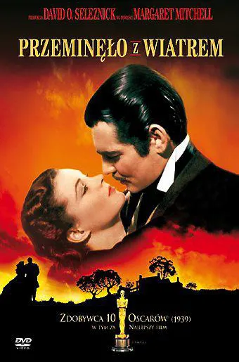

Fabuła filmu jest osadzona w czasach wojny secesyjnej i jest przedstawiana z pozycji pięknej Scarlett O’Hary, córki plantatora z Południa, Geralda O’Hary. Przegrana wojna wystawia na ciężką próbę przyzwyczajoną do wygód Scarlett. Na tym tle rozgrywa się historia wielkiej miłości Rhetta Butlera do pięknej Scarlett.
Scenariusz filmu został oparty na powieści Przeminęło z wiatrem Margaret Mitchell, do której prawa zakupił, za 50 tys. dolarów, producent David O. Selznick[3]. Zdjęcia do filmu rozpoczęto 10 grudnia 1938 roku sceną pożaru Atlanty, a ukończono 11 listopada 1939[4]. Premiera filmu odbyła się w Atlancie 15 grudnia 1939 roku[5]. Jest to jeden z najsłynniejszych filmów w technikolorze[6].
Film zarobił na świecie ponad 400 mln dolarów amerykańskich, z czego połowę w Stanach Zjednoczonych[7]. Według strony internetowej Box Office Mojo film ten do dziś pozostaje najbardziej dochodowym filmem w USA, jeśli brać pod uwagę inflację – przychód wyniósłby dzisiaj 1,8 mld dolarów (dla porównania, lider rankingu pod względem wartości bezwzględnej Gwiezdne wojny: część VII – Przebudzenie Mocy, według tych danych osiągnął przychód ponad 930 mln; stan na 10 stycznia 2020)[8]. Po polskiej premierze w 1963 roku miał 7 719 000 widzów[9], jako najbardziej udany film roku[10]. Do 1989 roku zostało sprzedanych łącznie 12 mln biletów kinowych[11].